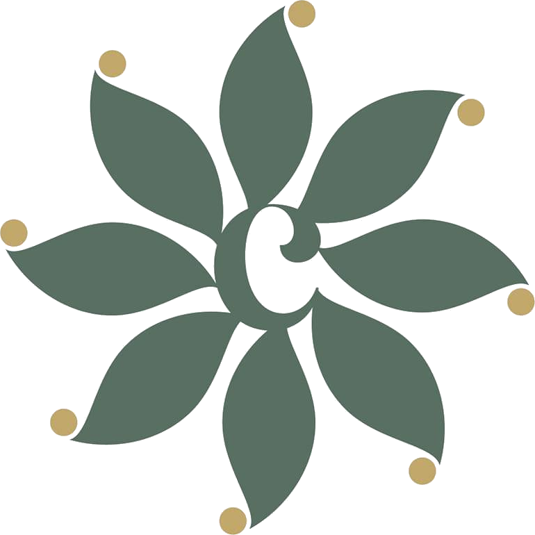
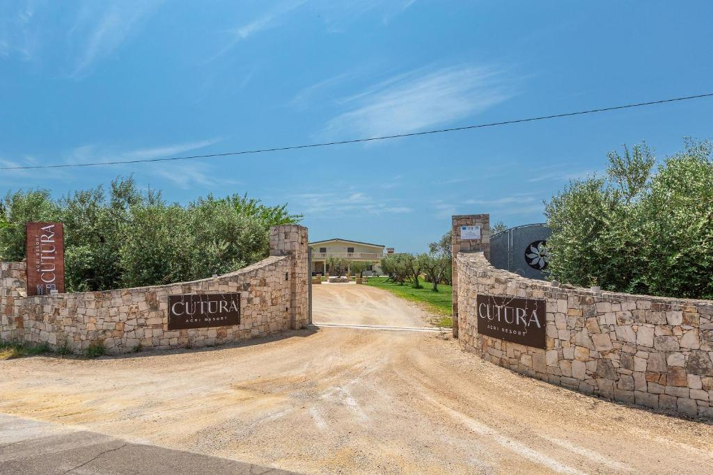
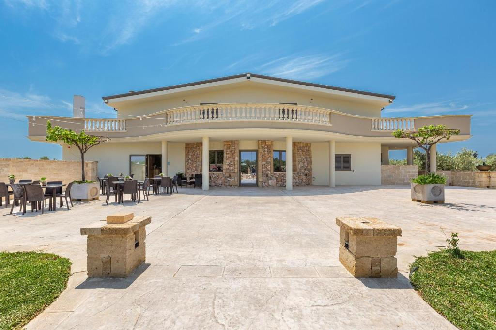
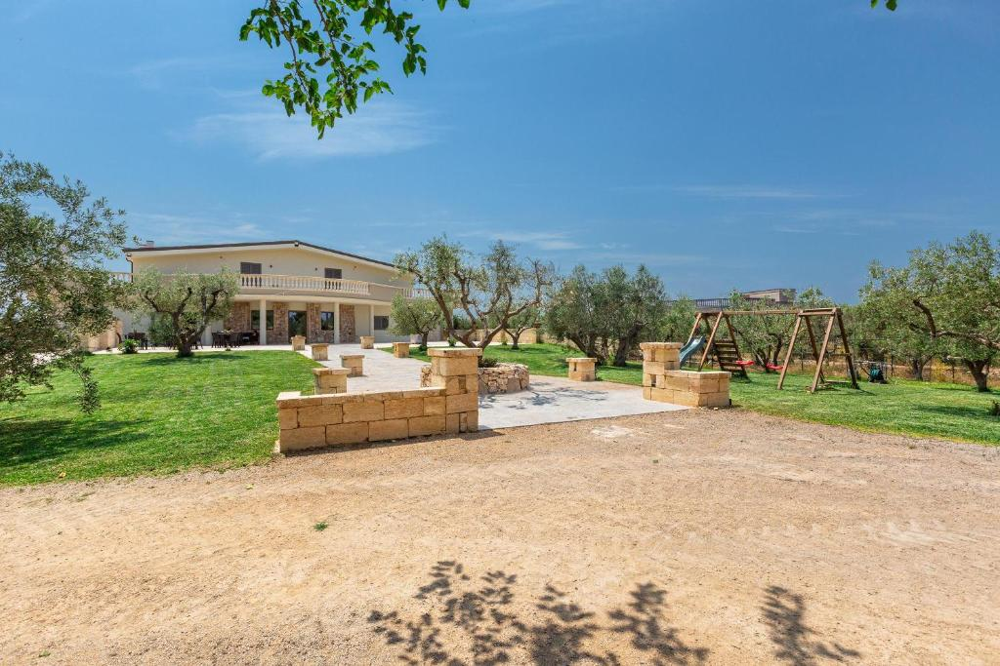
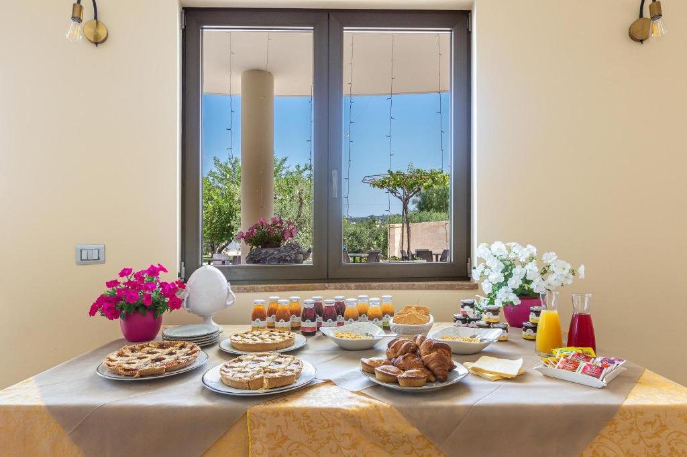
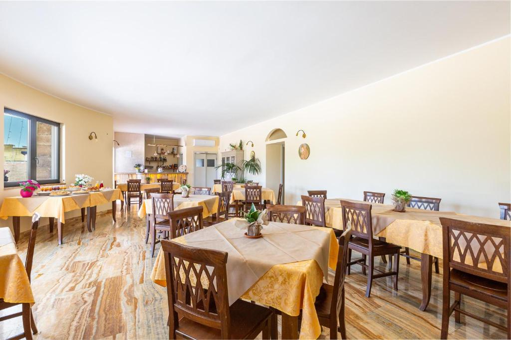
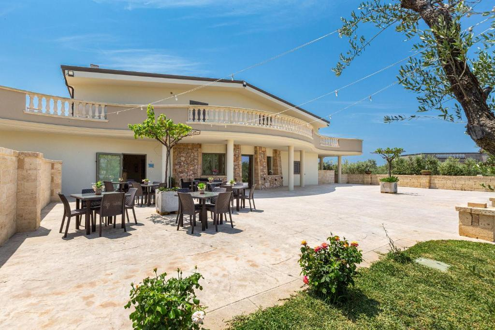

Foto da inserire
01
Camera matrimoniale o doppia
Una sistemazione accogliente per vivere Cutura in coppia o con un compagno di viaggio.
- Aria condizionata
- Wi‑Fi
- Bagno privato
- Comfort essenziali

CUTURAAgri Resort Verifica disponibilità
Parabita · Nel cuore del Salento
Camere accoglienti, cucina contadina e spazi all’aperto nel cuore del Salento.
La struttura

Tra gli ulivi di Parabita, Cutura accoglie i suoi ospiti in un’atmosfera semplice e autentica.
Un luogo dove rallentare, riscoprire il silenzio della campagna e vivere il Salento attraverso i suoi paesaggi e i suoi sapori.
Il giardino, gli spazi esterni e le aree relax invitano a prendersi il proprio tempo, con un’accoglienza familiare e discreta.

Camere
Due tipologie predisposte per la bozza. Nomi e dettagli saranno aggiornati dopo la conferma della struttura.
01
Una sistemazione accogliente per vivere Cutura in coppia o con un compagno di viaggio.
02
Una soluzione pensata per condividere il soggiorno con la propria famiglia, nel verde di Cutura.
Ristorante
Piatti ispirati alla tradizione, preparati con prodotti genuini e raccontati con semplicità.
Il ristorante è aperto anche a chi desidera vivere Cutura attraverso la cucina.
Prenota un tavolo


Esperienze ed eventi
Spazi immersi nel verde, sapori del territorio e un’atmosfera accogliente per vivere serate speciali nel cuore del Salento.
Chiedi informazioniPerché Cutura
Galleria
Recensioni
Questa sezione è pronta per ospitare recensioni verificate fornite dalla struttura.
Recensione verificata da inserire
Nome ospite e fonte da confermareRecensione verificata da inserire
Nome ospite e fonte da confermareRecensione verificata da inserire
Nome ospite e fonte da confermareDove siamo
Cutura si trova a Parabita, in una posizione comoda per raggiungere Gallipoli e partire alla scoperta del territorio salentino.
Via Provinciale Gallipoli